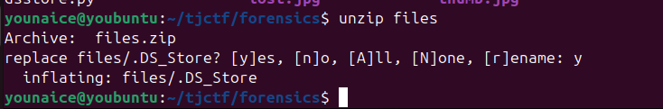
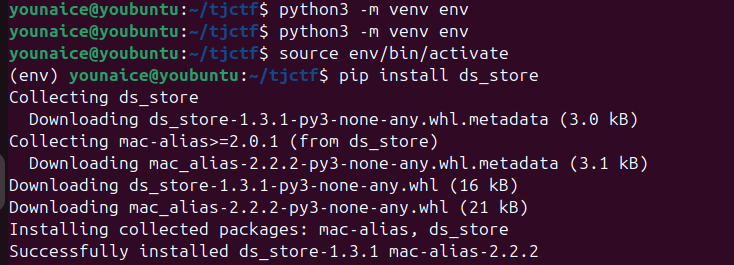
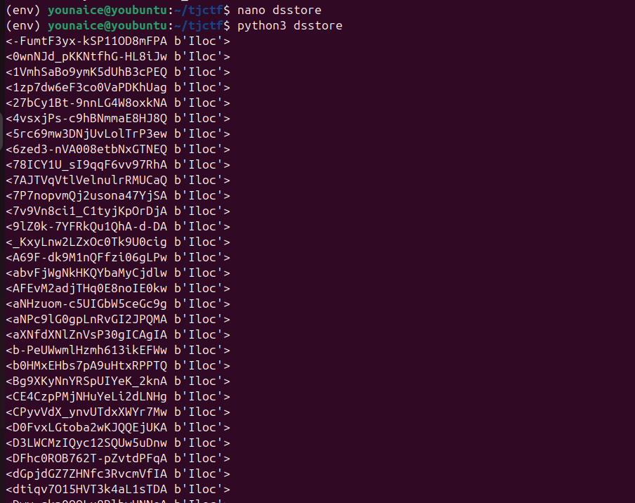
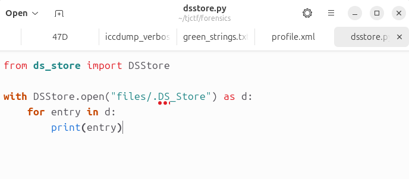
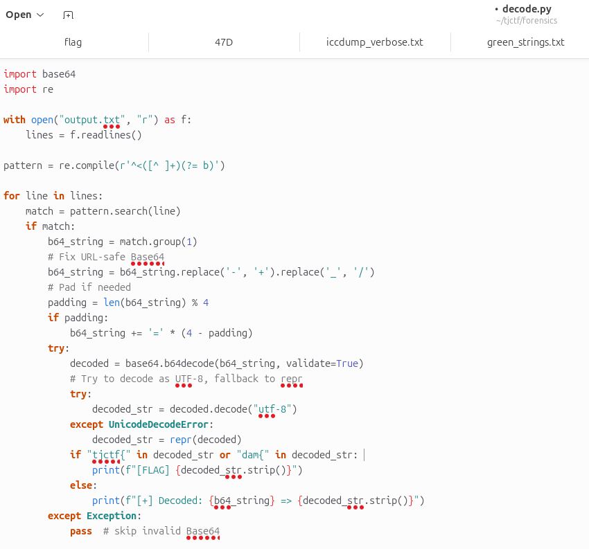
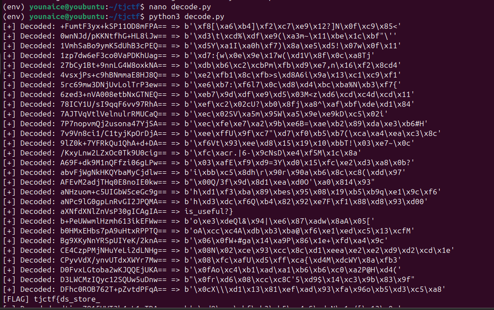

Challenge Description
The folder used to hold some important files — including one with the flag as its name. Unfortunately, all the files were deleted. Can you piece together the flag from what’s left behind?
Writeup Steps
-
We are given a zip file named files.zip. Unzip it. Then we got files/.DS_Store

-
Activate the virtual environment, then install ds_store here

Install ds_store
-
Then write a script to read the .DS_Store, and we got a list of Strings
 
python scripts
-
Since there's lots of Strings, hence i choose to decode them.

python script
Flag is thereeee
Flag
tjctf{ds_store_is_useful?}New Thing Learned
- How to use virtual environment
- How to deal with .DS_Store files